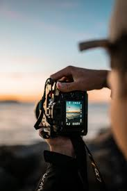

My Passion for Photography
Photography is one of my favourite hobbies and passions. It allows me to capture beautiful moments, places and memories through images. I enjoy observing nature, people and different surroundings and turning those moments into photographs. Photography helps me improve my creativity, patience and observation skills.

Why I Love Photography
Creativity
Photography gives me the freedom to experiment with different angles, lighting and compositions. It helps me express my creative ideas through pictures.
Nature Photography
Capturing nature is one of my favourite parts of photography. Flowers, mountains, sunsets and landscapes provide beautiful subjects.
Memories
Photographs help preserve important moments. Looking at old photographs allows us to remember special people, places and experiences.
Observation
Photography improves observation skills because it encourages me to notice small details, colours, patterns and interesting moments.
Lighting
Lighting plays an important role in photography. Understanding natural and artificial light can make photographs more attractive.
Composition
Good composition makes a photograph more interesting. I enjoy learning how to arrange different objects within a frame.
Photography Skills I Want to Improve
- Learn different camera settings.
- Improve composition techniques.
- Understand lighting better.
- Learn photo editing.
- Explore nature and portrait photography.
Photography is My Passion
For me, photography is more than just taking pictures. It is a way of seeing the world from a different perspective. Every photograph tells a story and captures a moment that can be remembered forever. I hope to continue learning and improving my photography skills.